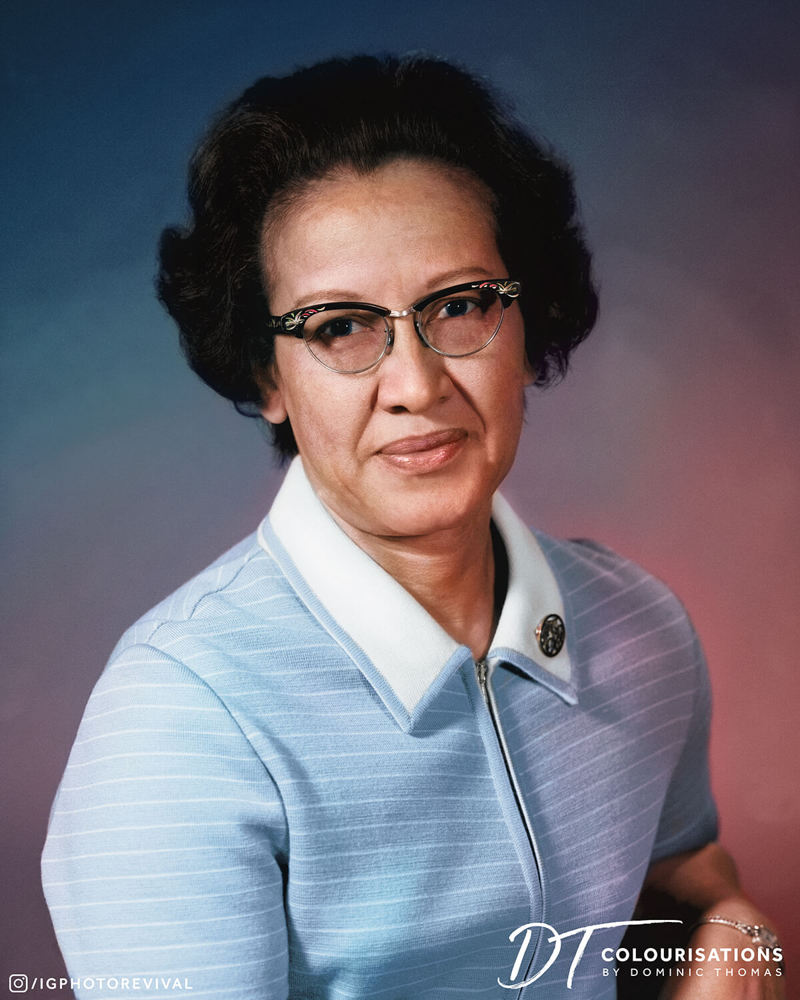

Mulheres que Mudaram a Tecnologia
Conheça as pioneiras que abriram caminho e continuam nos inspirando a sonhar grande e programar o futuro.
 1815 - 1852
1815 - 1852
Ada Lovelace
Considerada a primeira programadora da história. Escreveu o primeiro algoritmo para ser processado por uma máquina analítica.
Hedy Lamarr
Atriz e inventora. Criou a tecnologia de salto de frequência que serviu de base para o Wi-Fi e o Bluetooth.
 1906 - 1992
1906 - 1992
Grace Hopper
Almirante da Marinha dos EUA e Cientista da Computação. Criou o COBOL, uma das primeiras linguagens de programação e popularizou o termo "bug".

1918 - 2020Katherine Johnson
Matemática da NASA. Seus cálculos manuais foram essenciais para o sucesso do primeiro voo tripulado à Lua.
Gladys West
Matemática conhecida como "mãe do GPS" por desenvolver modelos complexos que mapearam com precisão a forma da Terra.
Margaret Hamilton
Cientista da Computação que liderou a equipe que desenvolveu o software de voo do Apollo 11, que pousou na Lua.